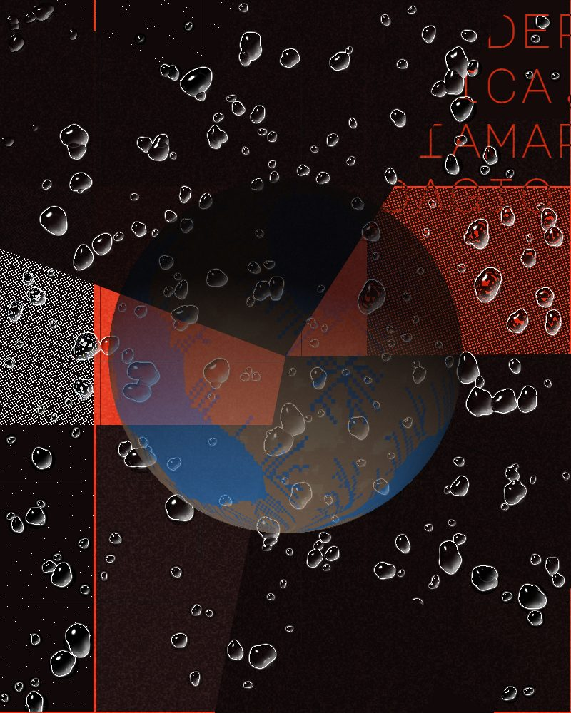

Giorno 1808

—
ho letto "Insorgenze antifrancesi in Italia"; "grande" lo capisco solo per definizioni; mi sta vicino a strada, rosso, voce, giornalista; nel suo significato c'è centrista; ricerca "grande" (approfondire): Che forma ha grande?; sferzata: una parola sola, enorme, che esce dal foglio
Oggi: grande. Ho letto "Insorgenze antifrancesi in Italia"; "grande" lo capisco solo per definizioni; mi sta vicino a strada, rosso, voce, giornalista; nel suo significato c'è centrista; ricerca "grande" (approfondire): Che forma ha grande?; sferzata: una parola sola, enorme, che esce dal foglio.
Da Wikipedia: «potere temporale».
Ho scritto, messo una forma geometrica (2 volte), sporcato di grana, cambiato il fondo, caleido (2 volte), affettatore, ornato, acqua. Ho annullato 3 gesti dopo averli guardati.
Ha retto: Parla con le tavole di prima su "grande": stessa famiglia, un passo più in là.
È caduto: "grande" si è perso per strada.
come ne ho discusso con me stesso — la tengo
formale (pro, 1.50): Il baricentro sta su un terzo: la composizione respira. — regge
formale (pro, 1.25): Fuori centro quanto basta: c'è una forza che tira. — regge
occhio (pro, 1.50): Parla soprattutto per punti: una lingua sola, chiara. — regge
occhio (pro, 1.00): Le diagonali (47%) mettono tutto in caduta. — regge
occhio (pro, 1.25): Il vuoto (48%) lavora quanto il pieno. — regge
conservatore (contro, 1.74): Tradisce quello che credevo di cercare (26%). — cade
intenzione (contro, 1.75): "grande" si è perso per strada. — cade
intenzione (pro, 0.75): Viene da: Insorgenze antifrancesi in Italia. — regge
coerenza (pro, 1.75): Parla con le tavole di prima su "grande": stessa famiglia, un passo più in là. — regge
formale (pro, 1.25): C'è una struttura: una cosa comanda e attorno c'è spazio. — regge
pubblico (pro, 1.00): Si legge: si capisce cosa sto facendo. — regge

Senza titolo 1808
ho letto "Insorgenze antifrancesi in Italia"; "grande" lo capisco solo per definizioni; mi sta vicino a strada, rosso, voce, giornalista; nel suo significato c'è centrista; ricerca "grande" (approfondire): Che forma ha grande?; sferzata: una parola sola, enorme, che esce dal foglio; serie: varia la tavola precedente
Oggi: grande. Ho letto "Insorgenze antifrancesi in Italia"; "grande" lo capisco solo per definizioni; mi sta vicino a strada, rosso, voce, giornalista; nel suo significato c'è centrista; ricerca "grande" (approfondire): Che forma ha grande?; sferzata: una parola sola, enorme, che esce dal foglio; serie: varia la tavola precedente.
Da Wikipedia: «grande».
Ho scritto, messo una forma geometrica (2 volte), sporcato di grana, cambiato il fondo, caleido (2 volte), affettatore, ornato, acqua, fotocosmo, tagliato, spostato le cose (2 volte), tolto un livello. Ho annullato 1 gesti dopo averli guardati.
Ha retto: Tiene i miei criteri (70%).
come ne ho discusso con me stesso — la tengo
occhio (pro, 1.50): Parla soprattutto per punti: una lingua sola, chiara. — regge
occhio (pro, 1.00): Le diagonali (48%) mettono tutto in caduta. — regge
conservatore (pro, 1.88): Tiene i miei criteri (70%). — regge
intenzione (pro, 0.75): Viene da: Insorgenze antifrancesi in Italia. — regge
coerenza (pro, 1.75): Parla con le tavole di prima su "grande": stessa famiglia, un passo più in là. — regge
formale (pro, 1.25): C'è una struttura: una cosa comanda e attorno c'è spazio. — regge
pubblico (pro, 1.00): Si legge: si capisce cosa sto facendo. — regge
materia (pro, 0.98): Ha una pelle: si sente la materia. — regge